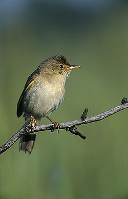
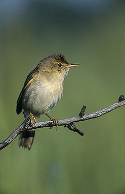

| Marsh Warbler | |
|---|---|
|  | |
| Conservation status | |
| Binomial name | |
| Acrocephalus palustris (Bechstein, 1798) |
| Marsh Warbler | |
|---|---|
|  | |
| Conservation status | |
| Binomial name | |
| Acrocephalus palustris (Bechstein, 1798) |
The Marsh Warbler, Acrocephalus palustris, is an Old World warbler currently classified in the family Acrocephalidae. It breeds in temperate Europe and western Asia and winters mainly in south east Africa. It is notable for incorporating striking imitations of a wide variety of other birds into its song.
The Marsh Warbler breeds in a variety of mostly damp habitats, but in Africa winters mainly in dry, well-vegetated areas. It is common over much of its breeding range and expanding its distribution in some areas. However in Britain it is now virtually extinct as a breeding bird.[1] This insectivorous warbler can be easily confused with several close relatives, but the imitative song of the male is highly distinctive.

.jpg){kind=link}